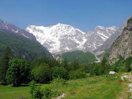

Idées week-end en montagne : Macugnaga Monte Rosa
Admirez aube et coucher de soleil, vivez des expériences nature et enrichissez vos jours avec la Maison Walser, la mine d’or et la vie de village — à portée de Milan, du Lac Majeur, Varese et Novare.
Hébergement
Hôtels, B&B et maisons de vacances
Détendez-vous dans l’un des nombreux hébergements du village : atmosphère alpine, accueil sincère, base parfaite pour une sortie en montagne de deux ou trois jours.
Consultez la liste à jour sur le portail officiel Macugnaga-Monterosa.
Où dormir à Macugnaga

Goût et village
Apéritif en centre, cuisine locale
Sirotez un apéritif en centre village ou goûtez la cuisine locale dans les nombreux restaurants : atmosphère, service et qualité typiques de l’hospitalité alpine.
Participez aux événements organisés au village et laissez-vous surprendre par la vie de village — le cœur de chaque week-end à Macugnaga.
Où manger à MacugnagaVotre week-end
À ne pas manquer
Trois expériences typiques pour un week-end Macugnaga Monte Rosa : nature, culture et histoire minière.


En altitude
Télésiège vers Burki et téléphérique vers Monte Moro
Avec le télésiège vous vous rapprochez de Burki et Belvedere ; avec le téléphérique vous montez vers Alpe Bill et, quand ouvert, le Passo Moro (~2870 m). Vérifiez toujours les ouvertures officielles.
Ce portail de réservation
Enrichissez vos vacances
Expériences authentiques et sûres, gérées par des opérateurs autorisés et qualifiés. Réservez en ligne, payez par carte ou PayPal, recevez aussitôt confirmation et contacts des guides.
Si vous séjournez à l’hôtel ou au camping sur le Lac Majeur, le Lac d’Orta ou le Lac de Mergozzo, Macugnaga est une destination de montagne accessible pour une journée ou un court week-end : enrichissez vos vacances au lac avec sentiers, village et panoramas sur le Monte Rosa.
La vraie montagne, vous ne la trouvez qu’ici — à partir du village, des sentiers, des bois et de l’histoire de ceux qui y vivent.
Choisissez votre expérience
FAQ
Questions fréquentes sur le week-end
Comment organiser un week-end à Macugnaga Monte Rosa ?
Hébergement + cuisine locale + une ou deux expériences réservées en ligne (nature, Maison Walser, mine). Idéal comme idée week-end en montagne depuis Milan, le Lac Majeur, Varese ou Novare.
Combien de temps depuis Milan ou Varese ?
Environ 1,5–2 h depuis Varese/Novare et environ 2 h depuis Milan ; accessible aussi depuis hôtels et campings sur Lac Majeur, Orta et Mergozzo. Détails sur Échappée urbaine.
À ne pas manquer ?
Coucher de soleil sur le Rosa, une expérience nature, Maison Walser et/ou mine d’or, et les remontées si ouvertes.